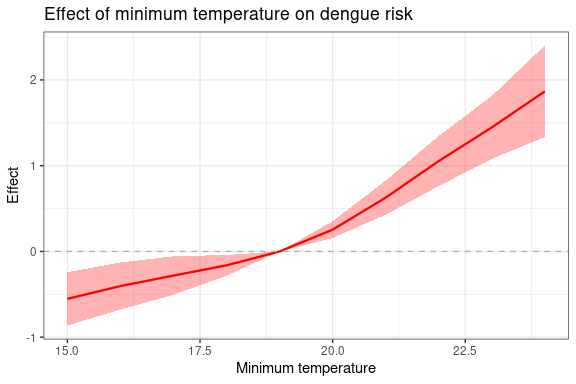

Distributed Lag Nonlinear Models
Overview
This vignette demonstrates how Distributed Lag Nonlinear Models (DLNMs) (Gasparrini, 2011) are integrated into the GHRmodel spatio-temporal Bayesian hierarchical modelling framework to estimate the delayed and nonlinear effects of various exposures on disease risk (Lowe et al., 2018, 2021). Models are fitted using integrated nested Laplace approximations in R (R-INLA) (Lindgren et al., 2011). This approach enables simultaneous modelling of space-varying, nonlinear, and lagged relationships between climate, environmental and/or socio-economic drivers and health outcomes, leveraging the functionality of the dlnm package (Gasparrini, 2011) within GHRmodel.
DLNMs extend distributed lag models (DLMs) to capture associations where the effect of an exposure (e.g. temperature) on an outcome (e.g. dengue incidence) is lagged in time. These exposure–lag–response associations are represented along two dimensions, exposure and lag, each modelled with its own basis function (a mathematical function used to flexibly represent nonlinear relationships) (Gasparrini, 2014). The two basis functions are then combined through a cross-basis tensor product (Gasparrini et al., 2010). The resulting cross-basis matrix can be included directly in an INLA-compatible model formula (Lowe et al., 2018, 2021). Model results are typically explored by predicting outcomes across a grid of lag times and exposure values. Interpretable outputs include exposure–response curves at specific lags, lag–response curves at specific exposure values, and cumulative effects summarising the exposure effect over the lag period. These outputs can be interpreted using either a forward or backward perspective (Gasparrini & Leone, 2014).
Information regarding installation and a brief summary of the package methodology is included in the vignette GHRmodel Overview, which can be accessed by typing vignette("GHRmodel_overview").
Example: DLNMs in GHRmodel
In this example, we demonstrate how to use GHRmodel to formulate, fit and evaluate DLNM terms within Bayesian hierarchical models in the R-INLA framework. Using the resulting DLNM model estimates, we assess dengue risk across a range of tmin values (monthly average daily minimum temperature averaged across each micro-region) and pdsi values (Self-calibrated Palmer Drought Severity Index for each micro-region) and across 1- to 6-month lags.
The example dataset contains monthly counts of notified dengue cases by microregion, along with a range of spatial and spatiotemporal covariates. This dataset represents a subset of a larger national dataset that covers the entire territory of Brazil. The subset focuses on a specific region, Mato Grosso do Sul, for the purposes of illustration and computational efficiency. The original full data set, which includes data from all Brazilian microregions, is available within this GitHub repository and in Zenodo.
💡 Tip: The examples in this vignette are designed to demonstrate package functionality and should not be interpreted as best-practice guidance for model selection.
0. Prepare data
Load libraries
# Load necessary package dependencies
library(dplyr) # Data manipulation
library(tidyr) # Data tidying
library(tidyselect) # Helpers for selecting variables programmatically
library(rlang) # Tools for tidy evaluation and non-standard evaluation in tidyverse code
library(ggplot2) # Data visualization: creating plots and graphs
library(cowplot) # Combining and arranging multiple ggplot2 plots into a single figure
library(grDevices) # Base R graphics device functions (e.g., color palettes, saving plots)
library(RColorBrewer) # Predefined color palettes for plots
library(colorspace) # Advanced color space manipulation and palettes
library(sf) # Handling spatial vector data (simple features)
library(spdep) # Spatial dependence and autocorrelation analysis
library(sn) # Skew-normal and skew-t distributions (for modelling skewed data)
library(INLA) # Integrated Nested Laplace Approximation for Bayesian models
library(GHRexplore) # Exploratory analysis of health data
library(dlnm) # Distributed linear and nonlinear models
# Load GHRmodel
library(GHRmodel) Data pre-processing
Create numeric ID variables for categorical features (such as year, month, or spatial units) that may be included as random effects, in line with R-INLA’s requirements:
# Load data
data("dengue_MS")
df <- dengue_MS
# Create ID variables
df <- df |>
# Filter out the year 2000
filter(year > 2000) |>
# Create numeric IDs for year, month and various spatial units.
mutate(
year_id = as.numeric(as.factor(year)),
month_id = as.numeric(as.factor(month)),
spat_id = as.numeric(as.factor(micro_code)),
spat_meso_id = as.numeric(as.factor(meso_code))
)Spatial data and graphs
To perform spatial analysis, polygon geometries must be provided as an sf object. For the dengue_MS data set, the areal polygons are already included in the package in the map_MS object. In map_MS, the code variable corresponds to the micro_code area identifier in the dengue_MS object.
# Load map included in package
data("map_MS")
# Create adjacency Matrix
nb <- spdep::poly2nb(map_MS)
g <- spdep::nb2mat(nb, style = "B")1. Model development
In this example we demonstrate how to use the GHRmodel helper functions to streamline writing INLA-compatible formulas including DLNM matrices.
One-dimensional basis matrix
The onebasis_inla() function is a wrapper around dlnm::onebasis(), which creates a one-dimensional basis matrix - a function used to model the nonlinear relationship of the outcome across a single dimension, in this case exposure values. This wrapper enhances the original function by allowing users to specify a custom prefix for the column names using the basis_name argument. This is particularly useful when multiple basis matrices (e.g., for different covariates) are included in the same model formula, as it ensures that each set of basis variables can be easily identified in the model formula by the INLA framework.
The covariate to be transformed is passed as a numeric vector to the covariate argument. The transformation applied to the covariate is controlled by the fun argument, which accepts the same options as dlnm::onebasis() and the splines package, including natural cubic splines ("ns"), B-splines ("bs"), and polynomial ("poly") functions, among others. The smoothness and flexibility of these spline basis functions are controlled through arguments such as degree (the polynomial degree of each piece), knots (the internal breakpoints that define where spline pieces join), and df (the degrees of freedom). The final nonlinear effect of the covariate is obtained by taking a weighted sum of the basis functions.
For detailed information about the available transformation functions, see ?onebasis.
💡 Tip: You can define a spline either by specifying the degrees of freedom (
df) or the exact knot locations (knots). Whendfis used, the number of internal knots is determined differently for natural splines (ns()) and B-splines (bs()):
ns(): internal knots =df – 1 – intercept.
Example: For a natural cubic spline wheredegreeis always 3,library(splines) ns(x = 1:10, df = 5)produces 5 basis functions with 4 internal knots (
5 – 1).
bs(): internal knots =df – degree (– 1 if an intercept is included).
Example: For a cubic B-spline (degree = 3),library(splines) bs(x = 1:10, df = 5, degree = 3)produces 5 basis functions with 2 internal knots (
5 – 3).
📝 Note: In addition to
onebasis_inla, GHRmodel supports nonlinear transformation of covariates via thecov_nl()function.cov_nl()usesinla.group()to discretize a covariate into intervals and then model the relationship as a random walk of order 1 ("rw1") or 2 ("rw2"). For more information about one-basis terms see the Complex Covariate Structures in GHRmodel vignette by typingvignette("GHRmodel_covariates").
Here we apply a cubic B-spline basis transformation to the tmin variable, measuring the minimum temperature, in order to include it as a nonlinear effect in the INLA-compatible model formula:
# Place 3 internal knots at the 25th, 50th, and 95th percentiles of tmin.
tminknots = quantile(df$tmin,c(25,50,95)/100, na.rm=T)
# Construct a one-dimensional basis for modeling the nonlinear effect of minimum temperature (tmin).
ob_tmin <- onebasis_inla(
covariate = df$tmin, # Numeric vector of the covariate values to transform.
fun = "bs", # Basis function type: B-spline.
knots = tminknots, # Internal knots for the spline
degree = 3, # Polynomial degree (cubic spline)
basis_name = "tmin" # Prefix for the generated basis matrix column names.
)
# Display the first few rows of the basis matrix to inspect the transformation.
head(ob_tmin)
#> tmin1 tmin2 tmin3 tmin4 tmin5 tmin6
#> [1,] 0 0.0000000000 0.03110108 0.3486913 0.58255507 0.0376525251
#> [2,] 0 0.0000000000 0.08824823 0.5280018 0.38354678 0.0002031681
#> [3,] 0 0.0005560503 0.19951665 0.6092978 0.19062947 0.0000000000
#> [4,] 0 0.0106996786 0.39954732 0.5387557 0.05099734 0.0000000000
#> [5,] 0 0.0184877161 0.46489629 0.4880934 0.02852261 0.0000000000
#> [6,] 0 0.0014234095 0.24044045 0.6086812 0.14945494 0.0000000000Cross-basis matrix
The crossbasis_inla() function is a wrapper around dlnm::crossbasis(), which creates a cross-basis matrix which models the nonlinear relationship of the outcome in two dimensions: the exposure (covariate or predictor) dimension and the lag dimension. The column names of the resulting matrix can be customized using the basis_name argument, to ensure that each set of cross-basis variables (for example, for different covariates) can be easily distinguishable in a model formula or output.
The covariate to be transformed is passed as a numeric matrix of lagged values to the covariate argument. The shape of the exposure-response dimension is controlled by the argvar argument and the shape of the lag-response dimension is defined by the arglag argument. These arguments are passed to the underlying onebasis and support the same options. Common choices are natural splines ("ns"), B-splines ("bs"), and polynomial ("poly") functions, among others (see ?onebasis). Finally, the lag argument defines the lag range to include in the cross-basis matrix.
To produce cross-basis matrices for tmin and pdsi, the first step is to produce the lagged-covariate matrix, which can be easily done using the lag_cov() function with the argument add = FALSE:
# Lagged covariate matrix for tmin
lagged_tmin <- lag_cov(data = df,
name = "tmin",
time = "date",
lag = c(1:2), # 1 to 2-month lags
group = "micro_code", # Independent time-series for each microregion
add = FALSE)
# Lagged covariate matrix for pdsi
lagged_pdsi <- lag_cov(data = df,
name = "pdsi",
time = "date",
lag = c(1:2), # 1 to 2-month lags
group = "micro_code", # Independent time-series for each microregion
add = FALSE)Here we create a cross-basis matrix for the response to tmin exposure across a lag period of 1 to 2 months. This matrix captures the relationship between both the level of exposure and the timing of its effect (lag).
# 2-dimensional nonlinear effect of dengue risk across tmin values and lags
cb_tmin <- crossbasis_inla(
covariate = lagged_tmin, # Matrix of lagged tmin values
lag = c(1, 2), # Lags from 1 to 2 months
basis_name = "tmin", # Prefix for output column names
argvar = list(fun = "bs"), # Polynomial degree (cubic spline)
arglag = list(fun = "ns", # Natural cubic splines for lag-response
knots=logknots(2, # Maximum lag (here 2)
nk=1)) # Number of knots
)
# Inspect the resulting matrix
dim(cb_tmin)
colnames(cb_tmin)cb_tmin <- readRDS(system.file("examples", "cb_tmin.rds", package = "GHRmodel"))Here we produce a similar cross-basis object for the pdsi variable:
# 2-dimensional nonlinear effect of dengue risk across pdsi values and lags
cb_pdsi <- crossbasis_inla(
covariate = lagged_pdsi,
lag = c(1, 2),
basis_name = "pdsi",
argvar = list(fun = "bs"), # Default B-spline for exposure-response
arglag = list(fun = "bs") # Default B-spline for lag-response
)Model formulas including DLNM terms
- Define priors
Bayesian models require priors to be assigned to parameters that the model will estimate. For more details regarding these prior choices, see GHRmodel_overview. For more details about priors in R-INLA, see this book chapter (Gómez-Rubio, 2020).
The monthly and yearly random effects are assigned weakly informative Gamma priors on the precision with parameters 0.01 and 0.01 (Gómez-Rubio, 2020).
# Define Gamma priors for the precision of temporal random effects
prior_t <- list(prec = list(prior = 'loggamma', param = c(0.01, 0.01))) The spatial random effect is specified using the BYM2 model, which facilitates assigning Penalized Complexity (PC) priors to its hyperparameters (Simpson et al., 2017). These priors are conservative and weakly informative, thus allowing the data to drive the inclusion of spatial structure (Moraga, 2019).
# Define penalized complexity (PC) priors for spatial random effects using BYM2
prior_sp <- list(
prec = list(prior = 'pc.prec', param = c(0.5 / 0.31, 0.01)), # Precision of spatial effect
phi = list(prior = 'pc', param = c(0.5, 2 / 3)) # Mixing parameter: structured vs unstructured
)Here we construct a set of model formulas including DLNM terms using the write_inla_formulas() function. The resulting formulas are then standardized into a GHRformulas object for use with the fit_models() function.
# Write INLA-compatible model formulas including DLNM terms
formulas_dlnm <- write_inla_formulas(
outcome = "dengue_cases",
covariates = list(
c("ob_tmin"), # Model 1: includes one-basis object (minimum temperature)
c("cb_tmin"), # Model 2: includes cross-basis for temperature
c("cb_tmin", "cb_pdsi") # Model 3: includes cross-basis for temperature and drought index
),
# First random effect: monthly seasonality
re1 = list(
id = "month_id", # Time index for monthly effect
model = "rw1", # First-order random walk model
cyclic = TRUE, # Enforce cyclicity over months (Dec → Jan wrap-around)
hyper = "prior_t", # Hyperprior object for precision
replicate = "spat_meso_id" # Separate seasonal pattern per mesoregion
),
# Second random effect: inter-annual trend
re2 = list(
id = "year_id", # Year index
model = "iid", # Independent and identically distributed
hyper = "prior_t" # Hyperprior for temporal smoothness
),
# Third random effect: spatial autocorrelation
re3 = list(
id = "spat_id", # Spatial unit identifier
model = "bym2", # BYM2 spatial model (structured + unstructured)
graph = "g", # Pre-computed spatial adjacency graph
hyper = "prior_sp" # PC priors for BYM2 model parameters
),
)
# Convert formulas list into a GHRformulas object for model fitting
formulas_dlnm_ghr <- as_GHRformulas(formulas_dlnm)
# Output is a GHRformulas object
class(formulas_dlnm_ghr)
#> [1] "GHRformulas" "list"2. Fit DLNMs with INLA
To fit a DLNM using INLA, you must first create the necessary basis functions using appropriate spline or polynomial transformations. These should be available in your working environment prior to model fitting (see 1. Model development).
When fitting DLNMs, it is essential to include the variance-covariance matrix of fixed effects in the model output to enable interpretation of the combined effects across lag dimensions. This is done by setting vcov = TRUE within the control_compute argument of fit_models().
# Fitting a DLNM model using a previously defined formula and basis objects
# Note: vcov = TRUE is required for DLNM interpretation and plotting
model_dlnm <-fit_models(
formulas = formulas_dlnm_ghr,
name ="mod",
data = df,
family ="nbinomial",
offset = "population",
control_compute = list (config = TRUE, vcov = TRUE),
pb = TRUE)
class(model_dlnm)3. DLNM output
To interpret DLNM model results, predictions over a range of exposure and lag values can be generated using the crosspred_inla() function. crosspred_inla() extracts the relevant estimated coefficients and variance-covariance matrix from a GHRmodels object and passes them to the dlnm::crosspred() function to return a GHRcrosspred object that can be used to compute predictions and uncertainty intervals. It requires the fitted model to include a variance-covariance matrix (vcov = TRUE in fit_models()). The range of exposure values over which predictions are generated can be adjusted using the from, to and at arguments.
The plot_coef_crosspred() function provides flexible plotting options for visualizing DLNM results from a GHRcrosspred object. The output is a ggplot2 object, allowing the user to further customize the output. It supports multiple plot types depending on the structure of the basis used (one-basis or cross-basis):
type = "overall": Plots the overall exposure-response relationship across all lags.type = "slices": Plots slices across lags (for a given exposure level) or exposures (for a given lag).type = "heatmap": A two-dimensional heatmap of the effect surface over exposure and lag (for cross-basis only). This visualization provides a clear overview of the joint effect pattern but does not depict uncertainty, such as credible intervals.
Here we show the model_dlnm$mod_gof element to provide a convenient overview of all fitted models describing identifiers for each model and the one-basis or cross-basis objects included.
| model_id | covariate_1 | covariate_2 |
|---|---|---|
| mod1 | ||
| mod2 | ob_tmin | |
| mod3 | cb_tmin | |
| mod4 | cb_tmin | cb_pdsi |
DLNM terms in model_dlnm
One-basis terms
The following example demonstrates how to extract and visualize the nonlinear effect of the tmin variable at lag 0 from a fitted model using crosspred_inla() and plot_coef_crosspred().
First, we generate predictions for the nonlinear effect of tmin using the corresponding one-basis object estimates (ob_tmin) from the second model in the model_dlnm object (mod2). The effect is centered at a reference value of 19°C (the mean of tmin mean(df$tmin)) to aid interpretability, meaning all effect estimates are relative to that value.
💡 Tip: The reference value sets the baseline for interpreting the estimated effect. This can be the mean of the covariate, a specific threshold of interest, or 0 when variables are centered at 0 (such as SPI or PDSI).
# Generate dengue risk predictions for a range of tmin values.
cpred_ob_tmin <- crosspred_inla(
model = model_dlnm, # GHRmodels object
basis = ob_tmin, # One-basis object for the `tmin` variable
mod_id = "mod2", # Identifier to select the correct model component
cen = 19, # Temperature centered at the mean of tmin 19°C
from = 15, # Predictions are generated for temperature values above 15
to = 24 # Predictions are generated for temperature values below 24
)
# Output a GHRcrosspred object
class(cpred_ob_tmin)
#> [1] "GHRcrosspred" "crosspred"Next, we visualize the predicted nonlinear effect across a range of tmin values (15°C to 25°C) at lag 0 using the "slices" plot type. This slice plot shows how the effect of minimum temperature on dengue risk varies at different values, with credible intervals highlighting uncertainty. Here we observe that minimum temperatures of 21°C and 22°C increase risk of dengue compared to the mean minimum temperature of 19°C.
# Plot the predicted dengue risk values against the tmin values
plot_coef_crosspred(
cpred_ob_tmin, # The cross-predicted object from crosspred_inla()
type = "slices", # Plot type: shows effect as a continuous curve
var = seq(15,24), # Range of tmin values to display on the x-axis
line_color = "red", # Color of the fitted effect line
line_size = 0.8, # Thickness of the effect line
ribbon_color = "red", # Color of the credible interval (ribbon)
ribbon_alpha = 0.3, # Transparency level of the ribbon (0 = invisible)
title = "Effect of minimum temperature on dengue risk", # Plot title
xlab = "Minimum temperature", # Label for the x-axis
ylab = "Effect" # Label for the y-axis
)
Cross-basis terms
This section demonstrates how to evaluate and visualize the effects from cross-basis DLNM estimates fit in an INLA model. In this case we use these estimates to assess how the effects of minimum temperature (tmin) on dengue risk change over time lag period and over a range of temperature values.
crosspred_inla() extracts model predictions for the cross-basis of minimum temperature (cb_tmin) across lags from the fitted model model_dlnm. The effect estimates are centered at 19°C (the mean minimum temperature).
# Generate dengue risk predictions for a range of tmin values and lags.
cpred_cb_tmin <- crosspred_inla(
models = model_dlnm, # GHRmodels object
basis = cb_tmin, # Cross-basis from tmin
mod_id = "mod3", # Model identifier
cen = 19, # Centering value (mean minimum temperature 20°C)
from = 17, # Start predicting at
to= 24
)
# Output a GHRcrosspred object
class(cpred_cb_tmin)
#> [1] "GHRcrosspred" "crosspred"Here we visualize the estimated relative risks (i.e., exponentiated effects) (exp = TRUE) across lags 1 to 2 for a range of temperature values using slice plots (type = "slices") with smooth interpolation across lags. These plots illustrate how the effect of temperature on dengue risk evolves over different lag times. We observe that high minimum temperatures of 23°C and 24°C, particularly at a one-month lag, are associated with a notable increase in dengue relative risk.
# Plot the predicted dengue risk values against the tmin values and lags
plot_coef_crosspred(
crosspred = cpred_cb_tmin, # Crosspred object with model predictions
type = "slices", # Plot lag-specific slices of exposure-response curves
exp = TRUE, # Exponentiate the coefficients,
lag = 1:2, # Display results for lags 1 through 6
line_color = "red", # Red color for the lines representing effect estimates
line_size = 0.8, # Line thickness set to 0.8 for better visibility
ribbon_color = "red", # Red shading for credible interval ribbons
ribbon_alpha = 0.3, # Set ribbon transparency to 30%
title = "Effect of minimum temperature on dengue relative risk by lag", # Main plot title
xlab = "Mean minimum temperature exposure", # Label for the x-axis (exposure variable)
ylab = "Relative Risk (RR)" # Label for the y-axis (effect estimate scale)
)
Here we focus on the estimated relative risk for specific temperature values, between 19°C and 24°C, specified in the var argument and displayed in the facets. In this plot we can observe that mean minimum temperatures 24°C at 1 month lag have a positive effect on dengue.
# Plot the predicted dengue risk values against the tmin values and lags
plot_coef_crosspred(
crosspred = cpred_cb_tmin, # Crosspred object with model predictions
type = "slices", # Plot temperature-specific slices of exposure-response curves
exp = TRUE, # Exponentiate the coefficients (to relative risk scale)
var = c(20:24), # Display results for temperature 19°C to 24°C
line_color = "red", # Red color for the lines representing effect estimates
line_size = 0.8, # Line thickness set to 0.8 for better visibility
ribbon_color = "red", # Red shading for credible interval ribbons
ribbon_alpha = 0.3, # Set ribbon transparency to 30%
title = "Effect of minimum temperatures 19°C to 24°C on dengue relative risk by lag", # Main plot title
xlab = "Lag", # Label for the x-axis (exposure variable)
ylab = "Relative Risk (RR)" # Label for the y-axis (effect estimate scale)
)
Here we visualize the estimated relative risks using type = "heatmap" to examine how the association between temperature and dengue varies jointly across different temperature values and lag periods. The plot reveals that the most pronounced effects occur at a lag of approximately one month: higher minimum temperatures at this lag are associated with an increased risk of dengue, while lower temperatures, around the mean temperature, are linked to a decreased risk.
# Plot the predicted dengue risk values against the tmin values and lags
plot_coef_crosspred(
crosspred = cpred_cb_tmin, # Crosspred object containing model predictions
type = "heatmap", # Create a 2D heatmap of effects over exposure and lag values
exp = TRUE, # Exponentiate effects to show relative risks
palette = "-RdBu", # Use the inverted "RdBu" color palette for the heatmap (blue for lower values)
title = "Effect of minimum temperature on dengue relative risk by lag", # Main plot title
xlab = "Mean minimum temperature exposure", # Label for the x-axis (exposure variable)
)
💡 Tip: To produce a smoother exposure-lag heatmap, you can fine-tune both the prediction resolution and the plotting interpolation
- Smoother x-axis (exposure): Increase the granularity of predicted exposure values by specifying a dense sequence via the at argument in
crosspred_inla(). This results in more prediction points across the exposure range. - Smoother y-axis (lag): Increase the number of interpolated lag points using the
n_lag_smoothargument inplot_coef_crosspred(). This controls how finely the effects are interpolated across lags for the heatmap.
# Generate predictions using a higher-resolution range of temperature values
cpred_cb_tmin_smooth <- crosspred_inla(
models = model_dlnm, # GHRmodels object
basis = cb_tmin, # Cross-basis from tmin
mod_id = "mod3", # Model identifier
cen = 19, # Centering value (mean minimum temperature 19°C)
at = seq(17,24, by=0.05), # Increase the number of temperature points for prediction
from = 17,
to= 24
)
# Plot a more granular heatmap with increased number of temperature values for prediction
# and increased number of lag interpolation values
plot_coef_crosspred(
crosspred = cpred_cb_tmin_smooth, # Crosspred object containing model predictions
type = "heatmap", # Create a 2D heatmap of effects over exposure and lag
exp = TRUE, # Exponentiate effects to show relative risks
n_lag_smooth = 200, # Smooth across lag with 200 interpolation points
palette = "-RdBu", # Use the inverted "RdBu" color palette
title = "Effect of minimum temperature on dengue relative risk by lag", # Main plot title
xlab = "Mean minimum temperature exposure", # Label for the x-axis (exposure variable)
)
Lastly, the type = "overall" displays the overall effect of the exposure variable (tmin) aggregated across all lag times, summarizing the total exposure-response relationship. This plot helps in understanding the net impact of the exposure on the outcome without focusing on individual lag effects. In this example, we observe that mean minimum temperatures above 22°C are associated with an increased risk of dengue. However, this plot does not reveal that this effect is primarily driven by temperatures at a one-month lag, which is clearer in the lag-specific plots.
# Plot overall effect of tmin on dengue across lags
plot_coef_crosspred(crosspred = cpred_cb_tmin,
type = "overall",
exp= TRUE, # Exponentiate effects to show relative risks
line_color = "Red", # Red color for the lines representing effect estimates
line_size = 0.8, # Line thickness set to 0.8 for better visibility
ribbon_color = "Red", # Red shading for credible interval ribbons
ribbon_alpha = 0.3, # Set ribbon transparency to 30%
xlab = "Mean minimum temperature exposure", # Label for the x-axis
ylab = "Effect" # Label for the y-axis (effect estimate scale)
)